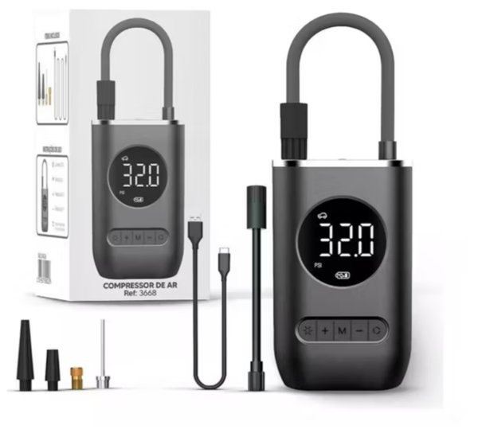

Achadinhos do Doutor Curioso
Os produtos que aparecem nos vídeos do @arquivo.oculto.curiosidades

Carro e moto Mini compressor de ar portátil 130 PSI calibra o pneu sem ir ao posto, com visor digital ★ 4,9 (15 mil avaliações, 30 mil+ vendidos)R$ 61,00 Cozinha
Kit 6 potes 2,2 L com tampa e trava (Giotto)
vão ao freezer e ao micro-ondas, empilháveis
★ 4,9 (15 mil avaliações, 20 mil+ vendidos)R$ 34,90
Cozinha
Kit 6 potes 2,2 L com tampa e trava (Giotto)
vão ao freezer e ao micro-ondas, empilháveis
★ 4,9 (15 mil avaliações, 20 mil+ vendidos)R$ 34,90 Nada encontrado. Tente outra palavra.
#publi: são links de afiliado. Se você comprar por eles, o canal pode ganhar uma comissão, sem custo extra para você. Preços e estoque são da Shopee e podem mudar.